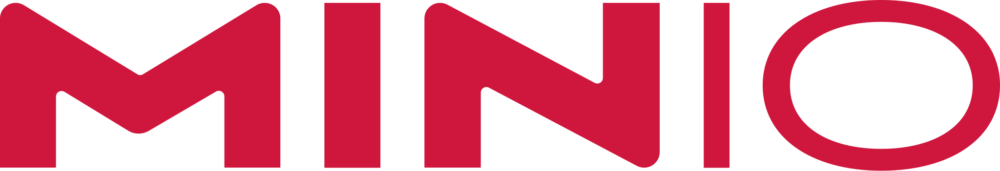
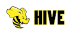
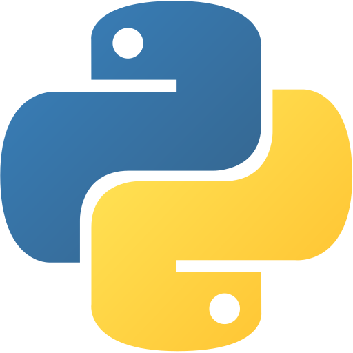
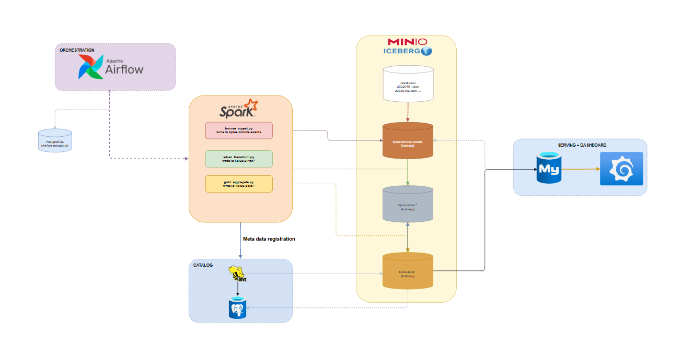
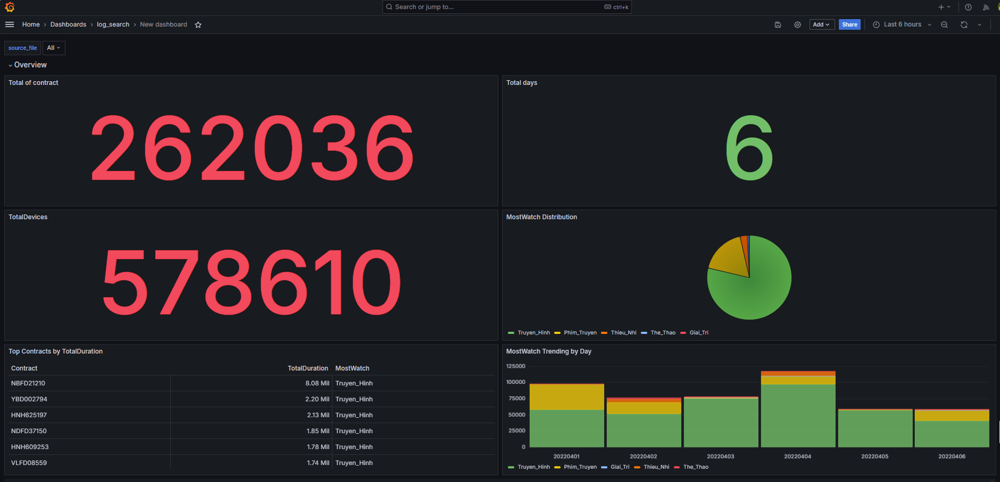
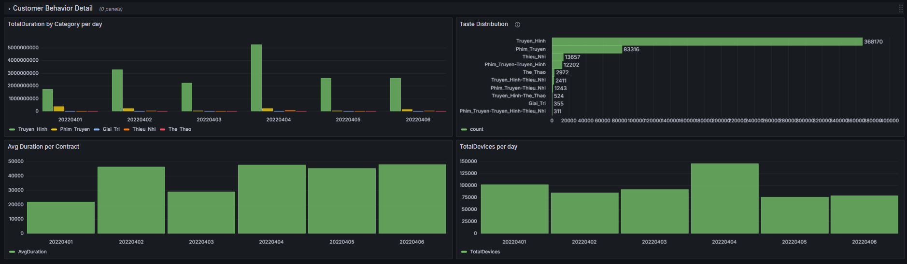

KPLUS Lakehouse
Data Pipeline
An end-to-end streaming lakehouse ingesting 7.7 GiB of KPLUS viewing logs through Bronze → Silver → Gold Iceberg layers — surfacing content behavior insights via a Grafana dashboard connected to MySQL.
Tech stack

MinIO
Hive
PythonThe problem
KPLUS generates daily JSON viewing logs — each file containing hundreds of thousands of raw Contract × MAC × AppName × TotalDuration events. The data sat in flat files with no way to track content consumption trends, identify heavy viewers, or answer questions like "which content category dominates across regions?"
The goal was to build a reliable, incremental pipeline that could ingest these files day by day — with CDC checkpointing to avoid re-processing — and produce clean aggregated metrics ready for a business dashboard.

Data model
| Table | Partitioned by | Description | Layer |
|---|---|---|---|
kplus.bronze.events |
execution_date |
Raw Contract · Mac · TotalDuration · AppName events, tagged with source_file | Bronze |
kplus.silver.events |
execution_day |
AppName pivoted into 5 content categories, summed per contract, plus TotalDevices | Silver |
kplus.gold.app_usage |
execution_day |
Per-contract MostWatch, Taste, and Active labels — ready for serving | Gold |
cdc_checkpoint |
— | MySQL table tracking last_offset per source file for incremental re-runs | Control |
summary_behavior_data |
— | MySQL serving table — UPSERTed from gold, queried directly by Grafana | Serving |
What the data actually looks like at each step
Raw → Bronze Read from MinIO, written as-is into Iceberg bronze
| Contract | Mac | AppName | TotalDuration | execution_date |
|---|---|---|---|---|
| QBFD08227 | B84DEE783A72 | CHANNEL | 25603 | 2026-06-30 |
| HNFD49991 | B046FCB27B96 | CHANNEL | 25602 | 2026-06-30 |
| DAFD91797 | E4AB8994D831 | CHANNEL | 25602 | 2026-06-30 |
Bronze → Silver AppName pivoted into categories, TotalDuration summed per contract
| Contract | Truyen_Hinh | Phim_Truyen | TotalDevices | source_file |
|---|---|---|---|---|
| AGAAA0346 | 86400 | 0 | 1 | 20220406 |
| AGAAA0550 | 76355 | 0 | 1 | 20220404 |
| AGAAA1511 | 10551 | 4223 | 2 | 20220406 |
Silver → Gold MostWatch, Taste, and Active labels computed per contract
| Contract | Truyen_Hinh | MostWatch | Taste | Active |
|---|---|---|---|---|
| AGAAA1367 | 76548 | Truyen_Hinh | Truyen_Hinh | Low |
| AGAAA1389 | 51951 | Truyen_Hinh | Truyen_Hinh | Low |
Gold → MySQL Final serving table — 3.87M rows exported and queried directly by Grafana
| Contract | Truyen_Hinh | Phim_Truyen | MostWatch | Taste | Active |
|---|---|---|---|---|---|
| QIAAA0364 | 84015 | 0 | Truyen_Hinh | Truyen_Hinh | Low |
| TND026221 | 0 | 18335 | Phim_Truyen | Phim_Truyen | Low |
| HUFD05523 | 213 | 11424 | Phim_Truyen | Phim_Truyen-Truye… | Low |
Approach
All transformation logic runs in PySpark locally; Iceberg handles table format, Hive Metastore handles the catalog, and four scripts move data one layer at a time.
Step 1 — CDC Ingest (bronze_ingest.py)
Each run is user-driven — pick a source date and a row count. The script reads last_offset from MySQL's cdc_checkpoint table, streams that slice of the JSON via boto3, then appends to Iceberg bronze:
- Offset tracking — checkpoint saved before the write begins, so a failed write never duplicates a batch on retry
- Source tagging — every row tagged with source_file so multiple dates can coexist in one table
- Schema evolution — merge-schema=true plus dynamic ALTER TABLE when a new AppName appears
Re-running the same date resumes from the saved offset — e.g. run 1 reads rows 0–39,999 and checkpoints at 40,000; run 2 reads 40,000–79,999.
Step 2 — Transform & Aggregate (silver / gold)
silver_ingest.py maps AppName → 5 content categories, pivots and sums TotalDuration per Contract, and counts distinct MACs as TotalDevices. gold_ingest.py then reads silver and computes per-contract behavior labels via CASE WHEN logic:
| Label | Logic |
|---|---|
| MostWatch | Dominant category by summed TotalDuration |
| Taste | All non-zero categories concatenated (e.g. Truyen_Hinh-Phim_Truyen) |
| Active | High if watched on >4 distinct days, else Low |
Where Hive Metastore fits in
Hive Metastore does not sit on the data path. Data flows raw → bronze → silver → gold → MySQL and never passes through Hive; it sits beside the pipeline as a registry. Every time a Spark job creates or appends an Iceberg table, the actual Parquet files land on MinIO, while a metadata pointer ("this table exists, here's its schema, here's the current snapshot") is registered in Hive — which itself persists that registry in Postgres.
📚 MinIO is the library's bookshelf — it holds the actual books. Hive Metastore is the card catalog — it tells you which shelf, but holds no pages itself.
Grafana dashboard
Two-row dashboard connected directly to the MySQL serving table via the MySQL data source connector.
| Row | Focus | Key visuals |
|---|---|---|
| Overview | KPI snapshot | 3 stat cards (Total Contracts, TotalDevices, Total Days) · MostWatch pie chart · stacked bar trending by day · top-10 contracts table |
| Customer Behavior Detail | Category-level breakdown | Stacked bar — TotalDuration by category per day · horizontal bar — top-10 Taste combinations · avg duration per contract · TotalDevices by day |
Screenshot


Two-row Grafana dashboard — Overview (top) and Customer Behavior Detail (bottom).
Results
What I'd do differently
Wire an Airflow DAG to orchestrate the full bronze → silver → gold → export chain automatically — currently each script is run manually in sequence. The DAG is designed; execution is the next step.
Also add data quality checks between layers — e.g. assert row count in silver ≥ distinct contracts in bronze, and flag unexpected AppName values before they silently land as an Error category.
The MySQL export is also slower than it should be at this row count (2M+) — it overwrites the full staging table and re-UPSERTs the entire gold slice every run, even though most rows haven't changed since the last export. Three ways I'd fix that next:
- Tie export to the bronze checkpoint — only pull rows touched by the latest ingested batch, instead of re-scanning the whole execution_day
- Hash-diff per row or per Contract — only UPSERT rows whose hash changed since the last run
- Go append-only — drop UPSERT, add an ingested_at column, let Grafana read the latest row per Contract — simpler, but needs a periodic archive/partition step to keep the table bounded